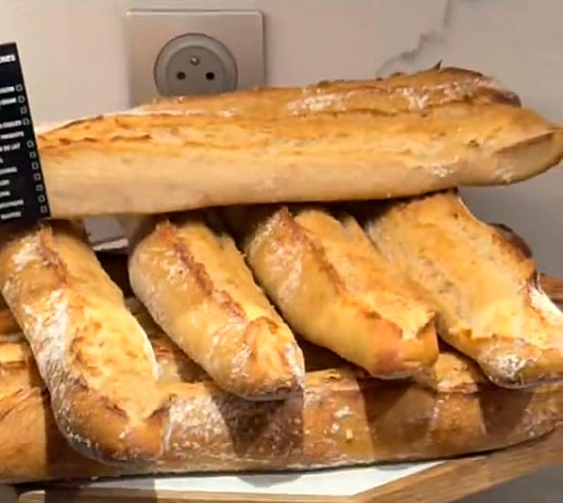
Les pains
La baguette croustillante, les pains spéciaux, les pains sportifs : une gamme de pain frais renouvelée chaque jour.
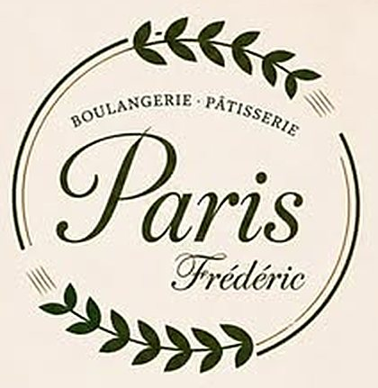
Boulangerie · PâtisserieAu cœur de Bras-Panon, le goût de la tradition française et la passion du bon pain vous attendent chaque jour, de la baguette croustillante aux pains sportifs et aux croissants gourmands.
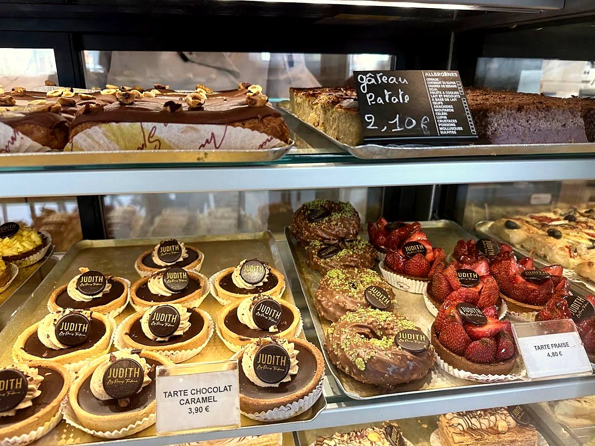
Nout zistoir
Chez Paris Frédéric, les pains, les viennoiseries et les pâtisseries naissent sur place, au laboratoire, avec des produits frais et des recettes maison. Une boulangerie artisanale du centre-ville, où l’on vient chercher sa baguette à l’aube et où l’on reste volontiers pour un café au salon.
« Nos viennoiseries sont fabriquées dans notre laboratoire selon nos méthodes artisanales habituelles depuis bientôt 30 ans. »
« Nos produits ne viennent pas d’une usine, mais ils sortent de notre fournil. Merci de faire vivre l’artisanat local. »L’affiche de la boutique, partagée sur votre page Facebook
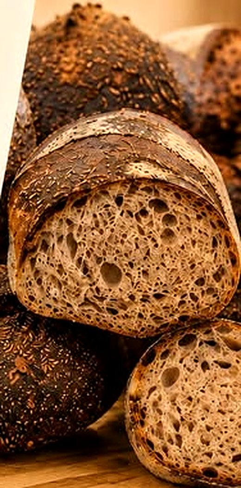
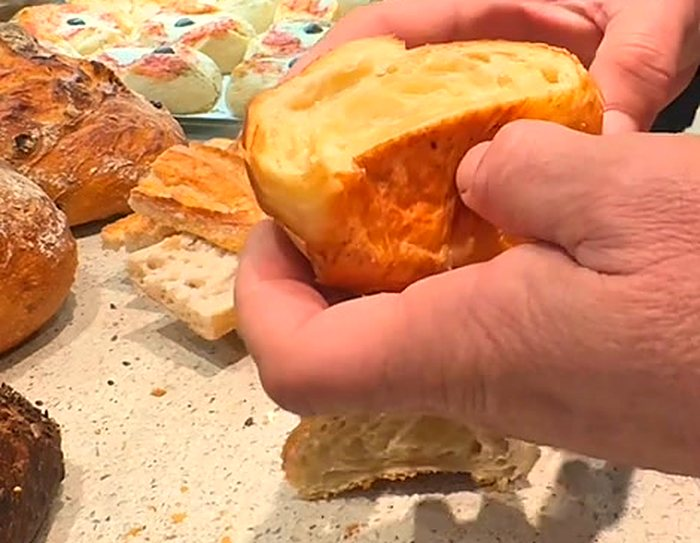
Au comptoir
Du premier pain de 5 h du matin aux douceurs de l’après-midi : ce que l’on retrouve dans les vitrines, en photos.

La baguette croustillante, les pains spéciaux, les pains sportifs : une gamme de pain frais renouvelée chaque jour.
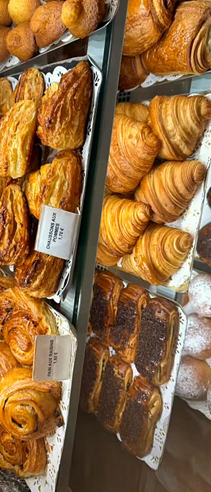
Croissants, pains au chocolat, chaussons : fabriqués au laboratoire, selon les méthodes artisanales de la maison.
Toujours croustillant, un bon croissant !
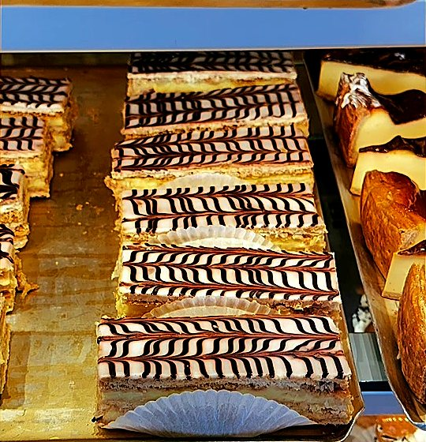
Mille-feuilles, tartes aux fraises, tartes chocolat caramel, gâteau patate : la vitrine JUDITH change au fil des jours.
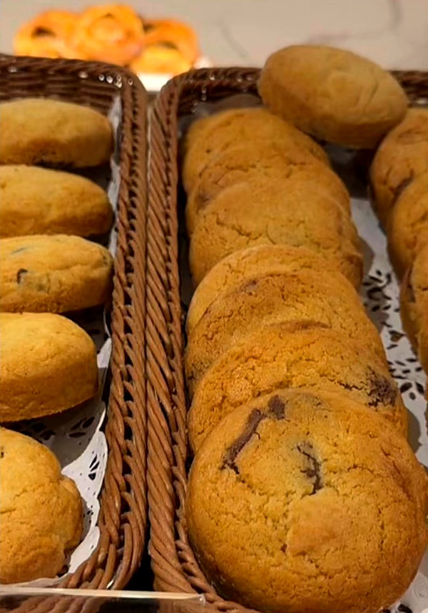
Cookies pépite chocolat et douceurs à emporter, pour le goûter ou la pause au salon.
JUDITHby Paris Frédéric
La signature pâtissière de la maison : entremets, tartes et grandes pièces montées. En tête d’affiche, l’authentique pièce montée créole.
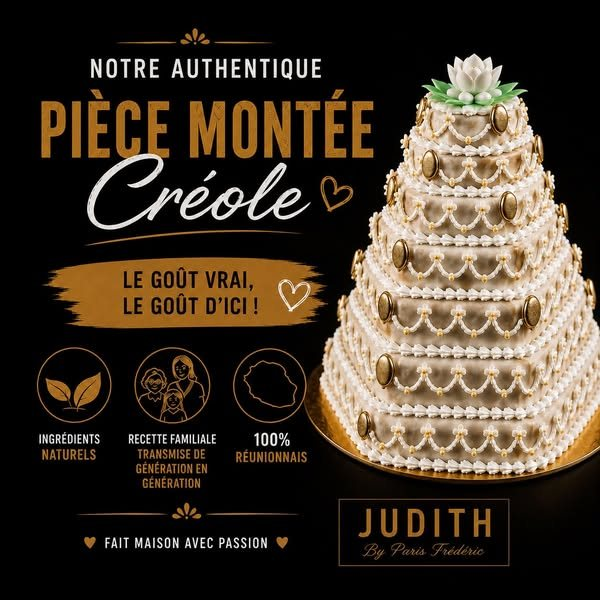
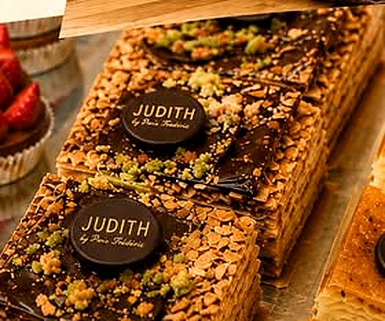
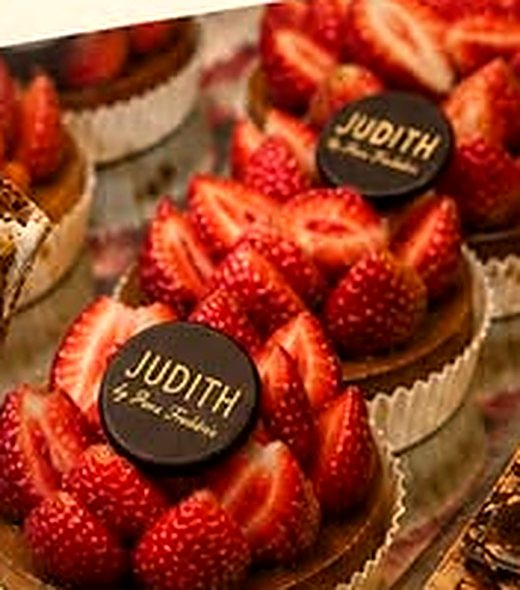
Le carnet des fêtes
Les fêtes approchent : ici, chacun choisit sa bûche et sa date de retrait, et la demande arrive directement à la boutique. Les parfums reprennent votre carte des bûches publiée sur Facebook.
Dans les vitrines
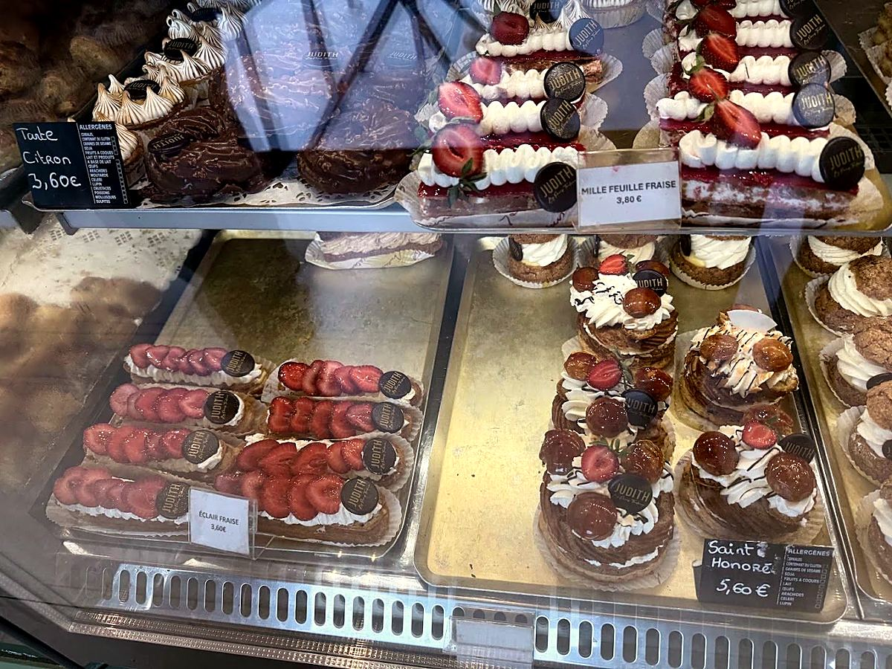
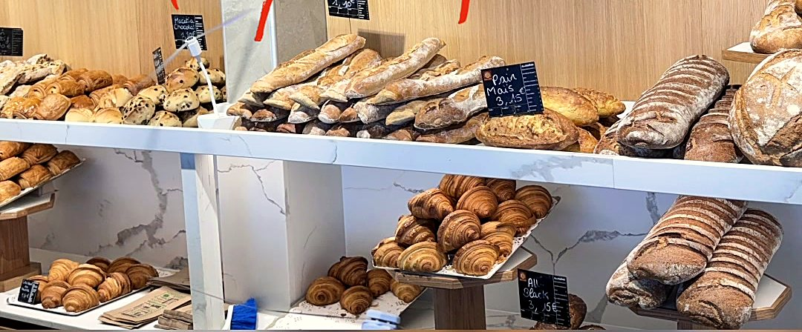
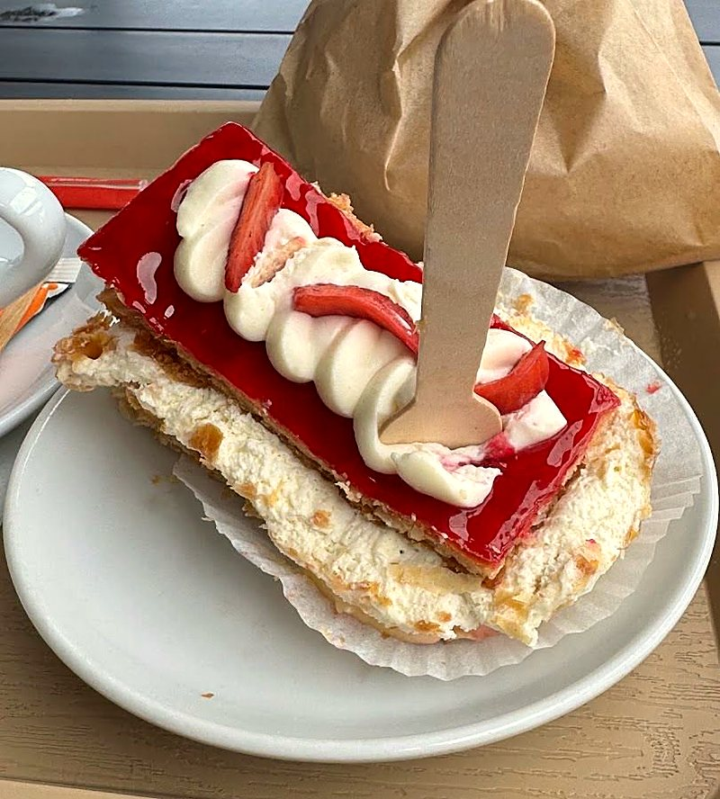
Le salon lounge
Un croissant au comptoir, un café et une part de tarte au salon : la boulangerie a aussi son espace convivial et son salon lounge, pour prendre le temps.
« Merci à nos équipes passionnées pour leur savoir-faire au quotidien, et merci à vous, chers clients, pour votre confiance et votre fidélité ♥ »
4,2 / 5
302 avis sur Google
7 185
abonnés qui suivent la boulangerie sur Facebook
D’après la fiche Google de la boulangerie.